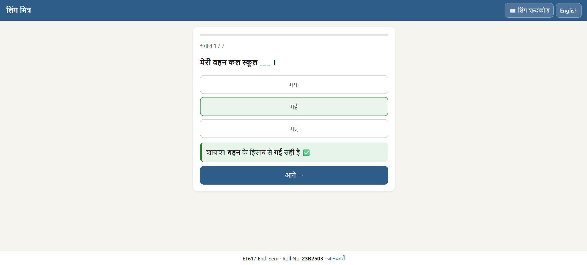
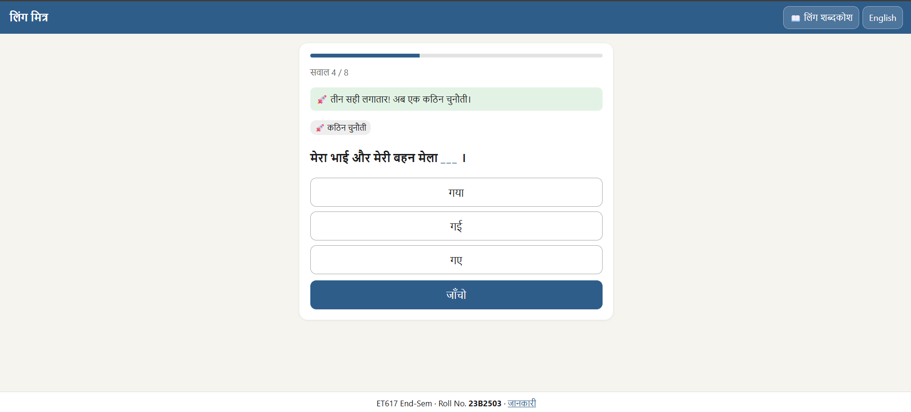
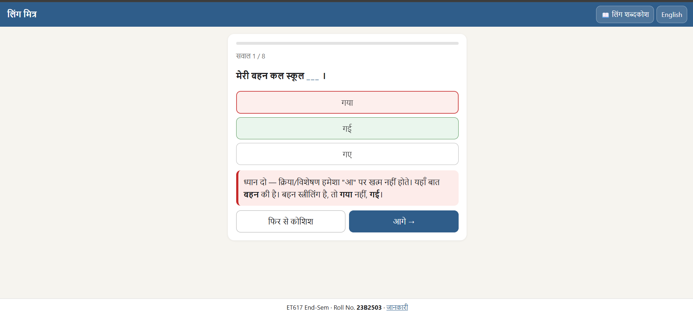
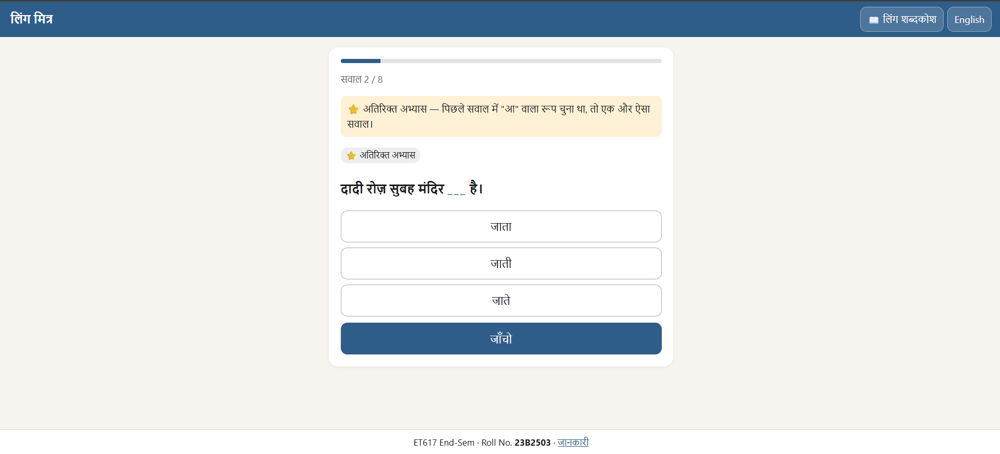

Roll No. 23B2503 · Live app: https://et617-23b2503.vercel.app · Repo: github.com/Daksh-Jain-27/et617-endsem-23B2503
| Field | Choice |
|---|---|
| ID | 23B2503 |
| P – Problem | P2 – Contextual language and literacy application |
| T – Topic | P2-T2 – Hindi: gender agreement (लिंग) in verbs and adjectives |
| L – Learner context | L8 – Home language differs from school medium (Bhojpuri at home, Hindi-medium school) |
| C – Design constraint | C2 – Learner's own language (all learner-facing text and feedback in Hindi; English toggle optional) |
Children who speak Bhojpuri at home but study in Hindi-medium schools often make gender-agreement errors in written Hindi. Their home speech marks gender on verbs and possessives much less strictly than school Hindi, so they carry over a "one form fits all" habit and write मेरी बहन स्कूल गया or मेरा किताब. Teachers usually just mark these red without explaining why. They also often mark harmless regional forms such as हम जा रहे हैं (हम for "I") as wrong, which shames the learner's home language. The learner needs short practice in their reading language (Hindi) that explains the agreement rule, separates real errors from acceptable regional variation, and gives targeted feedback for each misconception.
Context of use: The Hindi teacher sets it as language-support practice right after a Hindi writing task, when agreement errors appear. The learner uses it in the school computer lab and finishes it as Hindi homework on the family smartphone (Chrome), about 15–20 minutes per use. Answers are typed in Devanagari or built by tapping words from an on-screen word bank.
| Name / age | Sonu Kumar, 11, Class 6, Hindi-medium school in Varanasi. His family is from Ballia district. |
| Language | Home: Bhojpuri. School and reading: Hindi (the L8 gap). English is weak. |
| Prior knowledge | Reads and writes Devanagari fluently. Knows that लड़का/लड़की and भाई/बहन are "boy/girl" words. Recognises naming words and action words informally. Does not know that non-living nouns have grammatical gender, or that verbs and possessives must agree with the noun. |
| Misconception M1 – "masculine default" | Every verb or adjective takes the ‑आ form, whatever the subject: मेरी बहन स्कूल गया, चाय ठंडा है. Source: home-speech habit of not changing the verb for gender. |
| Misconception M2 – "possessive follows the speaker" | मेरा/मेरी depends on who is speaking or owning, not on the thing owned. A boy writes मेरा किताब ("I am a boy, so मेरा"). Source: home speech uses one possessive form for everything. |
| Device / time | School computer lab during the Hindi period, plus the family smartphone for Hindi homework; about 15–20 minutes per use. |
| Motivation | Lost marks in a Hindi test for "लिंग की गलती" and felt laughed at for speaking "गाँव वाली हिंदी". Wants better marks without being told his home language is wrong. |
Tool: a 📖 लिंग शब्दकोश (noun-gender dictionary, about 70 nouns, searchable), available on every screen.
| # | Format | Item | Model answer | Targets |
|---|---|---|---|---|
| Q1 | MCQ | मेरी बहन कल स्कूल ___ । (गया / गई / गए) | गई | M1, LO2 |
| Q2 | Sort (tap) | किताब, पानी, बस, दूध, चाय, पेड़ → पुल्लिंग / स्त्रीलिंग | स्त्री: किताब, बस, चाय · पुं: पानी, दूध, पेड़ | LO1 |
| Q3 | Correct the sentence (typed) | राहुल ने लिखा: "मेरा किताब खो गया।" | मेरी किताब खो गई। | M2 + M1, LO2 |
| Q4 | Fill in the blank (typed) | आज चाय बहुत ___ है। (ठंडा / ठंडी) | ठंडी | M1, LO2 |
| Q5 | Judge: correct / regional form / error | (a) हम कल मेला जाएँगे। (b) माँ बाज़ार गया। (c) मेरी दीदी स्कूल गई। | (a) regional form, OK (b) error → गई (c) correct | LO3, design challenge |
| Q6 | Free sentence (AI-checked) | कल तुम्हारी माँ या दीदी ने क्या किया? एक वाक्य लिखो। | e.g. मेरी दीदी बाज़ार गई। | LO2 |
| Q7 | Explanation (AI-checked) | "मेरी बहन स्कूल गई" — "गई" क्यों सही है, "गया" क्यों नहीं? | बहन स्त्रीलिंग है; क्रिया संज्ञा के हिसाब से बदलती है, बोलने वाले के हिसाब से नहीं। | LO3 |
| +M1 | MCQ (extra practice) | दादी रोज़ सुबह मंदिर ___ है। (जाता / जाती / जाते) | जाती | M1 |
| +M2 | MCQ (extra practice) | प्रिया बोली: "___ फ़ोन टूट गया।" (मेरा / मेरी) | मेरा (फ़ोन is masculine, even though Priya is a girl) | M2 |
| +Noun | Prerequisite lesson + sort | गाड़ी, घर, कुर्सी, आम, घड़ी, जूता | स्त्री: गाड़ी, कुर्सी, घड़ी · पुं: घर, आम, जूता | LO1 |
| +Challenge | MCQ | मेरा भाई और मेरी बहन मेला ___ । (गया / गई / गए) | गए (a mixed group takes masculine plural) | LO2 extension |
| Response | Feedback shown |
|---|---|
| Correct (Q1) | शाबाश! बहन के हिसाब से गई सही है ✅ |
| M1 – masculine default (Q1 answered गया) | ध्यान दो — क्रिया/विशेषण हमेशा "आ" पर खत्म नहीं होते। यहाँ बात बहन की है। बहन स्त्रीलिंग है, तो गया नहीं, गई। |
| M2 – possessive follows speaker (Q3 मेरा किताब) | "मेरा" इस पर निर्भर नहीं कि बोलने वाला लड़का है या लड़की। देखो किस चीज़ की बात है — किताब स्त्रीलिंग है, इसलिए मेरी किताब। |
| Regional variant (हम for मैं) | यह गलती नहीं है 🙂 "मैं" की जगह "हम" बोलना हमारे इलाके में आम है। लिंग सही है। परीक्षा में "मैं" लिखना ज़्यादा सुरक्षित है। |
URL: https://et617-23b2503.vercel.app · Stack: plain HTML/CSS/JavaScript (no framework or template) and one Vercel serverless function (api/check.js) calling Sarvam AI. No UI library was used.
Home (name · start / resume)
→ सीखो (concept explanation + home-speech/school-Hindi bridge)
→ Q1 MCQ → Q2 Sort → Q3 Correct sentence → Q4 Fill blank → Q5 Judge → Q6 AI sentence → Q7 AI explanation
↳ inserted after a wrong answer: ⭐ M1 extra item | ⭐ M2 extra item | 📘 prerequisite lesson + sort
↳ inserted after 3 correct: 🚀 challenge item
→ नतीजा (results per learning outcome, misconceptions seen, time, dictionary use)
Always available: 📖 लिंग शब्दकोश (popup) · हिंदी | English toggle · footer "Roll No. 23B2503 · जानकारी (About)"
Each question screen moves from input (select, tap or type) to जाँचो (check), then shows feedback, then offers फिर से कोशिश (retry) or आगे (next).
C2 visibly implemented: every screen, question, banner and piece of feedback is in Hindi by default (see the D5 screenshots). English is only an optional toggle.




The system responds differently: the correct learner is moved up to a harder item, while the M1 learner gets an explanation of the specific misconception plus one more item on the same pattern before moving on.
| What the AI does | Reads the learner's own Hindi sentence (Q6) or explanation (Q7). It labels the sentence correct, regional variant or agreement error, tags misconception M1 or M2, writes a corrected sentence, and gives short feedback in simple Hindi (plus English for the toggle). |
| Model / call | Sarvam AI sarvam-105b, an Indian-language LLM, via POST https://api.sarvam.ai/v1/chat/completions, header api-subscription-key (stored only as the Vercel environment variable SARVAM_API_KEY). Parameters: temperature 0.1, 20 s server timeout. Called from the serverless function /api/check, never from the browser. |
| Why AI only here | Q1–Q5 have fixed answers, so a rule check is exact, instant and free. AI is used only where answers are open-ended. |
SYSTEM:
You are a kind Hindi teacher for an 11-year-old Class 6 child (Sonu) who speaks Bhojpuri at home and studies in a Hindi-medium school.
Topic: grammatical gender agreement (लिंग) of verbs, adjectives and possessives (मेरा/मेरी) with the NOUN in standard Hindi.
Rules you must follow:
- Only agreement between a noun and its verb/adjective/possessive counts as an ERROR.
- Using "हम" for "मैं", spelling pairs गये/गए, नयी/नई, लिये/लिए, and other regional forms are ACCEPTABLE VARIANTS, never errors.
- Misconception M1 = learner uses the masculine "-आ" form for a feminine noun (e.g. "माँ बाज़ार गया").
- Misconception M2 = learner makes मेरा/मेरी follow the speaker/owner instead of the thing owned (e.g. a boy writes "मेरा किताब").
- Feedback must be in very simple Hindi (max 2 short sentences, Class 6 level), warm, never shaming home speech. Also give an English version.
Reply with ONLY a JSON object, no other text.
USER (Q6):
Learner's sentence (about what their mother/sister did): "<learner text>"
Return JSON: {"label":"correct"|"variant"|"error","misconception":"M1"|"M2"|"other"|"none",
"corrected":"<corrected sentence in Hindi>","feedback_hi":"...","feedback_en":"..."}
USER (Q7):
Question asked: In "मेरी बहन स्कूल गई", why is "गई" correct and not "गया"?
Model answer: "बहन स्त्रीलिंग है, और क्रिया संज्ञा (बहन) के हिसाब से बदलती है, बोलने वाले के हिसाब से नहीं।"
Learner's explanation: "<learner text>"
Judge if the explanation names the noun's gender (बहन is feminine) as the reason.
Return JSON: {"label":"correct"|"partial"|"error","misconception":"M1"|"M2"|"other"|"none","feedback_hi":"...","feedback_en":"..."}
sentence or explain; the text must be non-empty and at most 300 characters.label must be in the allowed set, feedback_hi must be a string, and all strings are length-capped. Anything else is rejected as an error.checker.js: noun-gender lexicon plus verb, adjective and possessive endings) analyses the same sentence. If the rule checker can identify the subject and disagrees with the AI about whether there is an agreement error, the rule-based result is shown with the label "⚖️ AI और नियम में मतभेद — नियम वाला जवाब दिखाया".Example rule-checker outputs (tested): मेरा किताब खो गया → error M2, "मेरी किताब खो गई" · माँ बाज़ार गया → error M1, "माँ बाज़ार गई" · हम कल मेला जाएँगे → regional variant · दीदी ने खाना बनाया → not flagged (ने-constructions are out of scope, so no false alarm).
adapt()), decided on the first attempt: wrong with M1 or M2 → one extra item on the same misconception; 2 or more wrong in noun sorting → prerequisite mini-lesson on noun gender plus another sort; 3 correct in a row → harder challenge. Each insertion happens at most once, and a banner tells the learner why it appeared, so the system stays transparent and doesn't feel punishing.Every check returns one of three labels, and only a mismatch between a noun and its verb/adjective/possessive counts as an error:
Q5 asks the learner to make this distinction themselves (LO3), and the same policy is written into the AI prompt and the rule checker, so all three agree.
| Outcome | Assessment items / rubric | Success criterion |
|---|---|---|
| LO1 Classify noun gender | Q2 and the prerequisite sort, plus a delayed post-test of 10 new nouns (5 non-living, e.g. घड़ी, दरवाज़ा) | ≥ 80% correct on the post-test for ≥ 70% of learners |
| LO2 Produce agreeing forms | Q1, Q3, Q4, Q6, extra items, and a post-test of 5 sentences to correct or complete | ≥ 4/5 on the post-test; M1/M2 errors in a follow-up writing task down by ≥ 50% from the pre-test |
| LO3 Explain and distinguish | Q5 (3 sentences) and Q7 explanation, scored with a 0–2 rubric: 2 = names the noun and its gender as the reason; 1 = correct form but vague reason; 0 = speaker-based or wrong reason | Average ≥ 1.5 on Q7; Q5 fully correct for ≥ 70% of learners |
(1) Learners who triggered M1 or M2 answer the matching extra item correctly at least 70% of the time, showing the feedback works. (2) Post-test outcomes meet the criteria above. (3) No learner is penalised for a regional variant, which can be checked from the logs. (4) The AI–rule disagreement rate stays below 10% of Q6 answers, and a teacher review of a sample confirms the label shown was correct.
AI_chat_log.md (also in the repo at report/AI_chat_log.md)sarvam-105b: used inside the app at runtime for learner feedback (not for building it), as specified in D6.